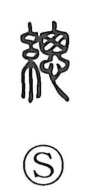

総

Uncategorized
Kun: atsumeru, suberu, subete | On: sou
total ・ overall ・ to gather ・ to bring together ・ to govern
Explanation
Originally written 總, this is a phono-semantic character. With the thread radical signaling strands, the graph depicts the ends of threads drawn together and tied into a tuft; early glosses also understood it as bundled hair. From this concrete image of binding and bundling arose the meanings “to collect, to bring together,” which further extended to “to oversee and unify,” as seen in compounds like 総督. In Japanese it also came to denote “all, the whole; total.” The on-reading sō follows the phonetic element.